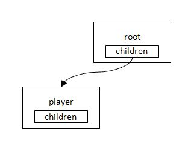

This chapter explains programming methods using object-oriented techniques.
Contents
The framework of a general PSM program was explained in the "Framework of Programs" chapter. The framework is almost the same as when creating a program using PSM.
Try creating a program framework as a base class, inheriting it, and making it available for use.
Open Sample/Tutorial/Sample04_01 and look at GameFramework.cs of the TutoLib project.
Sample/Tutorial/TutoLib/GameFramework.cs
public class GameFramework : IDisposable { ... public void Run(string[] args) { Initialize(); while (loop) { time[0] = (int)stopwatch.ElapsedTicks;// start SystemEvents.CheckEvents(); Update(); time[1] = (int)stopwatch.ElapsedTicks; Render(); } Terminate(); } ... }The GameFramework class is defined. The Update() and Render() that were in Main() in the previous source code are processed in Run(). The mechanism will entail creating an instance for this GameFramework class, calling the Run() method, and entering a loop.
The lines, time[0] = (int)stopwatch.ElapsedTicks and time[1] = (int)stopwatch.ElapsedTicks, are processing for measuring the processing time. The measuring of processing time is made available for various use since it is required in any program. This will be explained later.
Inherit the GameFramework class and implement the GameFrameworkSample class. The following is the inherited section.
Sample/Tutorial/Sample04_01/GameFrameworkSample.cs
public class GameFrameworkSample: GameFramework { Int32 counter=0; public ImageRect rectScreen; SimpleSprite spritePlayer; public override void Initialize() { base.Initialize(); rectScreen = graphics.Screen.Rectangle; Texture2D texturePlayer = new Texture2D("/Application/resources/Player.png", false); spritePlayer = new SimpleSprite(graphics, texturePlayer); spritePlayer.Position.X = rectScreen.Width/2.0f; spritePlayer.Position.Y = rectScreen.Height/2.0f; spritePlayer.Position.Z = 0.0f; } public override void Update() { base.Update(); #if DEBUG debugString.WriteLine("counter "+counter); debugString.WriteLine("Buttons="+PadData.Buttons); #endif int speed = 4; if((PadData.Buttons & GamePadButtons.Left) != 0) { spritePlayer.Position.X -= speed; } if((PadData.Buttons & GamePadButtons.Right) != 0) { spritePlayer.Position.X += speed; } if((PadData.Buttons & GamePadButtons.Up) != 0) { spritePlayer.Position.Y -= speed; } if((PadData.Buttons & GamePadButtons.Down) != 0) { spritePlayer.Position.Y += speed; } ++counter; } public override void Render() { graphics.Clear(); graphics.Enable(EnableMode.DepthTest); spritePlayer.Render(); base.Render(); } }Override parts that are unique to this program, such as, player operation and implement.
base.Initialize(), base.Update(), and base.Render() call processing defined by the GameFramework base class.
Note that base.Initialize() is called at the beginning of the inherited Initialize(), base.Update() is called at the beginning of the inherited Update(), and base.Render() is called at the end of the inherited Render().
If you forget to implement base.Update() and base.Render(), the processing performed by the base class will not be performed, and operation will not work correctly.
Use the created GameFrameworkSample class as follows.
Sample/Tutorial/Sample04_01/AppMain.cs
public class AppMain { public static void Main(string[] args) { using( GameFrameworkSample game = new GameFrameworkSample()) { game.Run(args); } } }Generate an instance of GameFrameworkSample and call Run() to run the program in the same manner as before.
Try executing the program.
The player will move the same as before.

This time, there are numbers at the upper left.
Update and Render indicate the percentage of one frame's processing time.
FPS indicates the number of times the screen can be re-drawn in one second.
managedMemory indicates the volume of managed memory used by the PSM application.
This is explained further in the next section.
Understanding "where processing is and how long it is taking" is very important for game applications. Although it is not problematic if processing time takes 10 to 50 milliseconds in a console application, processing delays will occur in a game if it cannot keep up with screen switches, and noticeable problems will appear.
When Sample04_01 is executed, numbers will be shown next to the Update and Render character strings in the upper left of the screen. This shows how long each processing time is taking with 16 milliseconds (the timing for the screen to switch) as 100%.
These numbers will vary depending on the machine where the execution takes place, but on my PC the transitions are approximately Update= 0.50% and Render= 25.00%.
Update hardly takes any processing time at all. This is because processing is light as Update() only entails simple conditional judgments and addition calculation.
Render is 25% so its processing time is fairly long.
Note: Because rendering mechanisms differ by device, the processing time for Render is only a reference value.
If the processing time for Update+Render exceeds 100%, it won't keep up with the screen switching, and processing delays will occur.
The measuring of processing time takes place in GameFramework.cs. Let's look at this part.
Sample/Tutorial/TutoLib/GameFramework.cs
virtual public void Initialize() { Console.WriteLine("Initialize()"); stopwatch = new Stopwatch(); stopwatch.Start();The Stopwatch class is a class for measuring elapsed time. The measuring will start with stopwatch.Start().
while (loop) { time[0] = (int)stopwatch.ElapsedTicks;// start SystemEvents.CheckEvents(); Update(); time[1] = (int)stopwatch.ElapsedTicks; Render(); }stopwatch.ElapsedTicks is the elapsed time.
We want the first time of the frame so we will make the beginning of the loop, time[0] = (int)stopwatch.ElapsedTicks, and retain the time.
Next we will make the location where Update() terminates, time[1] = (int)stopwatch.ElapsedTicks; and retain the elapsed time. The difference of time[1]-time[0] will be the elapsed time.
Next, we will similarly use time[2] = (int)stopwatch.ElapsedTicks; to retain the elapsed time after Render() termination.
virtual public void Render() { #if DEBUG if(drawDebugString==true) debugString.Render(); #endif time[2] = (int)stopwatch.ElapsedTicks; graphics.SwapBuffers(); ... preTime=(int[])time.Clone(); }preTime=(int[])time.Clone(); is the processing that copies the measured time to an array.
Then each elapsed time will be calculated and shown in DebugString. DebugString is a class that shows ASCII characters at the top of the screen. A character string will be specified to the argument and it will be used like Console.Write().
void CalculateProcessTime() { float fps = 60.0f; float ticksPerFrame = Stopwatch.Frequency / fps; timePercent[0]=(preTime[1]-preTime[0])/ticksPerFrame; timePercent[1]=(preTime[2]-preTime[1])/ticksPerFrame; debugString.WriteLine(string.Format("Update={0,6:N}%", timePercent[0] * 100)); debugString.WriteLine(string.Format("Render={0,6:N}%", timePercent[1] * 100)); debugString.WriteLine(string.Format("FPS={0,5:N}", fps)); ... }Because the currently-measured frame cannot be displayed, the measured time of the previous frame, which has been stored in preTime, is displayed here.
For those who wish to learn the details of locations where processing takes time, increase the size of the time[] array, then try increasing time[1] = (int)stopwatch.ElapsedTicks;.
To toggle between ON and OFF for debug font, keep pressing the L button and press the R button (on a keyboard, keep pressing the Q key and press the E key).
Let's implement more and more characters required for a game.
- Stars.
- Bullets that you fire.
- Enemies.
- Explosions that occur when a bullet hits.
If the aforementioned characters are implemented separately, the program will become more and more complicated. Having five types is manageable, however, having a large number of types will make program management impossible.
Extract shared elements among characters in a game and ease manageability by using them around.
The following explains how to create a base class with shared elements and derive players, enemies, stars, and bullets from it.
Open Sample/Tutorial/Sample04_02.
This section uses a technique called the actor model. Actors take the roles of players, enemies, stars, and bullets, then they are given commands and the program is executed.
In the following program, the actor base class is defined.
Sample/Tutorial/TutoLib/Actor.cs
public class Actor { public string Name { get; set; } public enum ActorStatus { Action, UpdateOnly, RenderOnly, Rest, NoUse, Dead, } ActorStatus status; public ActorStatus Status { get { return status; } set { status = value; StatusNextFrame = value; } } public ActorStatus StatusNextFrame; protected Int32 level=0; protected List<Actor> children = new List<Actor>(); public List<Actor> Children { get { return children;} } public Actor() { this.Name = "no_name"; this.Status = ActorStatus.Action; } public Actor(string name) { this.Name = name; this.Status = ActorStatus.Action; } virtual public void Update() { foreach( Actor actorChild in children) { if(actorChild.Status == ActorStatus.Action || actorChild.Status == ActorStatus.UpdateOnly) actorChild.Update(); } } virtual public void Render() { foreach( Actor actorChild in children) { actorChild.Render(); } } virtual public void AddChild(Actor actor) { children.Add(actor); actor.level = this.level+1; }The key point is that each method is implemented as a virtual function with "virtual". When an inherited class overwrites a virtual function, the overwritten method will be called.
An actor can have a child actor added using AddChild(). The following is a diagram of AddChild().
- First, create the actor that will be the root (source).


- Add a player with root.AddChild(player).
- Use root.AddChild(startManager) to add startManager for managing each star.

- Now with starManager as the parent, add star0 with starManager.AddChild(star0), and star1 with starManager.AddChild(star1).

Making a tree structure for actors will be more convenient than simply connecting them linearly.
When root.Update() and root.Render() are described in Update() and Render() inside Main(), processing will be performed accordingly for all actors belonging to the tree.
Because actors will always be making contact with the framework, retain a reference to the framework.
In the following program, the Actor class is inherited and the GameActor class is defined.
Sample/Tutorial/Sample04_02/GameActor.cs
public class GameActor : Actor { protected GameFrameworkSample gs; protected SimpleSprite sprite; public GameActor(GameFrameworkSample gs, string name) : base(name) { this.gs = gs; } public override void Render () { if(sprite!=null) sprite.Render(); base.Render (); } }GameFrameworkSample gs and SimpleSprite sprite are added to the class members. We will have the character actors used in the game be derived from this GameActor class.
In the following program, the GameActor class is inherited and the Player class is defined.
Sample/Tutorial/Sample04_02/Player.cs
public class Player : GameActor { public Player(GameFrameworkSample gs, string name, Texture2D textrue) : base(gs, name) { sprite = new SimpleSprite(gs.Graphics, textrue); sprite.Position.X=gs.rectScreen.Width/2; sprite.Position.Y=gs.rectScreen.Height/2; sprite.Center.X = 0.5f; sprite.Center.Y = 0.5f; sprite.Position.Z=0.5f; } public override void Update () { #if DEBUG gs.debugString.WriteLine(string.Format("Position=({0},{1})\n", sprite.Position.X, sprite.Position.Y)); #endif int speed = 4; if((gs.PadData.Buttons & GamePadButtons.Left) != 0) { sprite.Position.X -= speed; if(sprite.Position.X < sprite.Width/2.0f) sprite.Position.X=sprite.Width/2.0f; } if((gs.PadData.Buttons & GamePadButtons.Right) != 0) { sprite.Position.X += speed; if(sprite.Position.X> gs.rectScreen.Width - sprite.Width/2.0f) sprite.Position.X=gs.rectScreen.Width - sprite.Width/2.0f; } if((gs.PadData.Buttons & GamePadButtons.Up) != 0) { sprite.Position.Y -= speed; if(sprite.Position.Y < sprite.Height/2.0f) sprite.Position.Y =sprite.Height/2.0f; } if((gs.PadData.Buttons & GamePadButtons.Down) != 0) { sprite.Position.Y += speed; if(sprite.Position.Y > gs.rectScreen.Height - sprite.Height/2.0f) sprite.Position.Y=gs.rectScreen.Height - sprite.Height/2.0f; } base.Update(); } }The input from the controller is the same as before, but the player is not allowed to go outside the screen. When the method is overwritten with override, do not forget to call base.Update() and base.Render(). If you forget to call them, the children will not be processed.
The locations #if DEBUG to #endif show the player coordinates.
These locations are only active when the build setting is "Debug". When the build setting is set to "Release", these locations will not be displayed. Therefore if you have debug output that you only want to display during development, it is useful to write them in this manner.
Next, define the Star class. The method is the same as the Player class.
Sample/Tutorial/Sample04_02/Star.cs
public class Star : GameActor { float speed; public Star(GameFrameworkSample gs, string name, Texture2D textrue, Vector3 position, Vector4 color, float speed) : base(gs, name) { sprite = new SimpleSprite(gs.Graphics, textrue); sprite.Position = position; sprite.SetColor( color); this.speed = speed; } public override void Update() { sprite.Position.Y += speed; if (sprite.Position.Y > gs.rectScreen.Height ) { sprite.Position.Y = 0.0f; sprite.Position.X = (int)(gs.rectScreen.Width * gs.rand.NextDouble()); } base.Update(); } }The coordinates are updated by adding speed to each frame with Update(). This will make a star move downward. When the star moves out of the screen, set the Y coordinate to 0.0f and specify a random X coordinate to make the star appear again from the top of the screen.
Now, create the instance of the defined class and register the actor tree with root.AddChild(). The source code will be as follows.
Sample/Tutorial/Sample04_02/GameFrameworkSample.cs
public override void Initialize() { base.Initialize(); rectScreen = graphics.GetViewport(); root = new Actor("root"); Texture2D texturePlayer = new Texture2D("/Application/resources/Player.png", false); root.AddChild(new Player(this, "Player", texturePlayer)); Texture2D textureStar = new Texture2D("/Application/resources/Star.png", false); Actor starManager = new Actor("starManager"); ... Star star; for( int i=0; i< 20; ++i) { star= new Star(this, "star"+i, textureStar, new Vector3((float)(rectScreen.Width * rand.NextDouble()),(float)(rectScreen.Height* rand.NextDouble()),0.7f), starColors[ i % starColors.Length], (float)(1.0f * (rand.NextDouble() + 0.5f))); starManager.AddChild(star); } root.AddChild(starManager); }With this, the actor tree will be like the following diagram.
If you call root.Update() and root.Render() from the framework, all of the registered actors will be processed.
Sample/Tutorial/Sample04_02/GameFrameworkSample.cs
public override void Update() { base.Update(); #if DEBUG debugString.WriteLine("counter "+counter); debugString.WriteLine("Buttons="+PadData.Buttons); #endif root.Update(); ++counter; } public override void Render() { graphics.Clear(); graphics.Enable(EnableMode.DepthTest); root.Render(); base.Render(); }The source code is much more efficient in comparison with before. Writing compact source code is very important when creating large programs.
Let's try building and executing it. Stars have appeared on the screen.

When we try executing, it can be confirmed that
- The Update() that reflects the controller input in the coordinates as defined by the Player class for the player
- and the Update() that moves the stars from up to down as defined in the Star class for stars
are being called. This kind of operation is called "polymorphism" in object orientation.